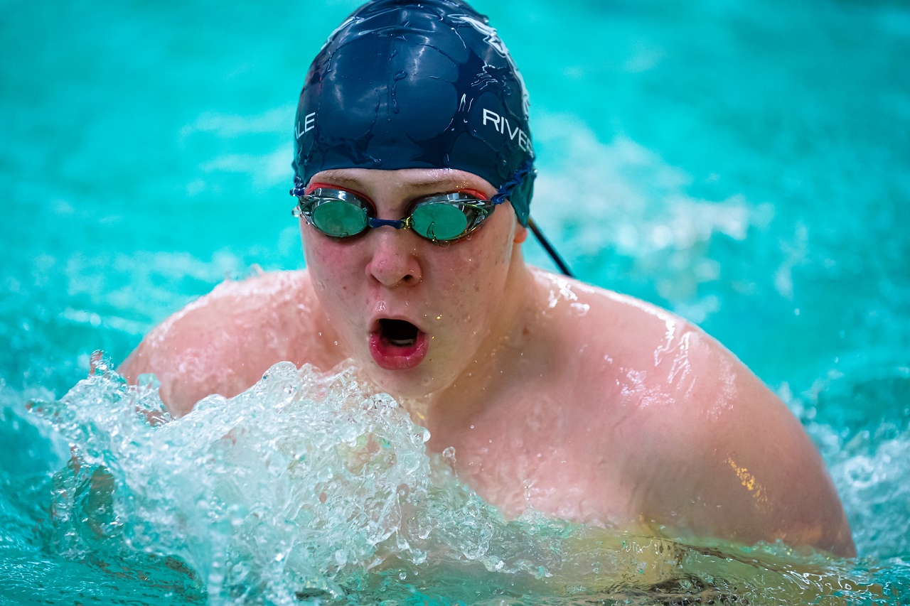
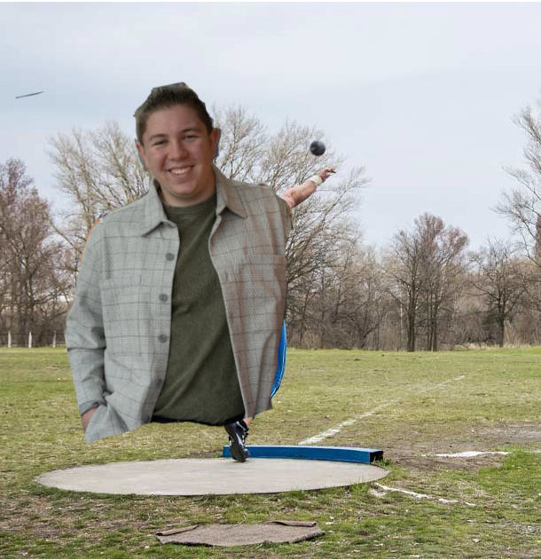
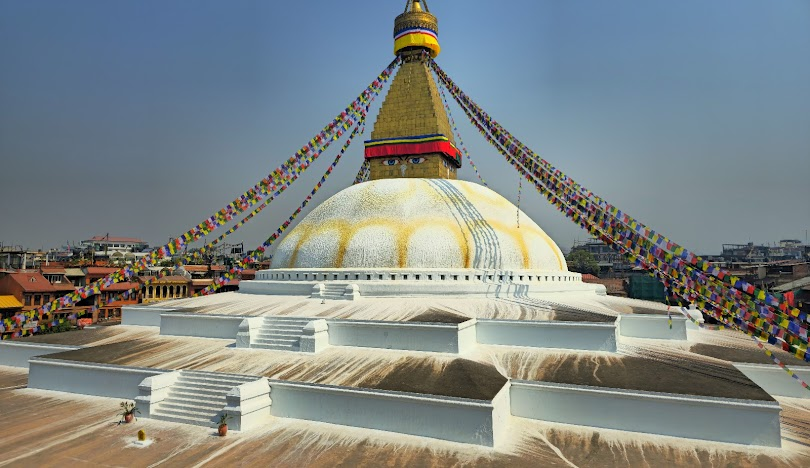
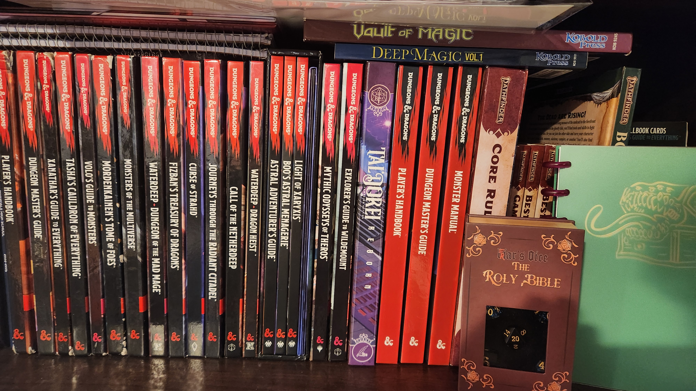

Sports

Swimming
I have been swimming for as long as I can remember. I was a part of OCST (now Legacy Aquatics) up until Freshman year of high school, but I continued to swim with the high school team every year. My main events are the 100 Br, 200IM, and 500Fr and I held the school record in the 500fr until we got a really good swimmer on the team.

Track and Field (Shot and Jav)
I joined the throwing team of Riverdale’s track and field team in my junior year and continued through my senior year. I am not especially good at my events (Shot Put and Discus), but I enjoy them, and I try my best.
Outdoor Activities
Mountaineering
Through Post 58, I have climbed two mountains, Mt. Hood and Mt. St. Helens, and I plan to climb another in the summer (to beat my dad’s record of just Helens and Hood). I climbed Helens in the summer of my freshman year, and Hood the summer of my junior year. I enjoy mountaineering, and the views from the top of a mountain cannot be beat.

Nepal
In the spring of 2025, I got the chance to go on a two-week trek in Nepal. We flew into Kathmandu, then to Lukla (considered one of the most dangerous airports in the world), and began the trek from there. We were accompanied by two guides, a translator who was about our age, and four sherpas who carried our gear. The trip was incredible, I got to see so many amazing places, and talk to interesting people on the trail.

Sailing
Through both my school and Post 58, I have had the opportunity to go sailing in the San Juan Islands. Once aboard the Zodiac, and another time in a much smaller and much newer sailboat. Both times were incredible experiences, and at one point on the smaller boat, an orca swam right under us. (Guess how we found out one of the people on the boat was scared of orcas)
Gaming

D&D
I am an avid D&D player and forever GM. I have run many campaigns for friends, and have been a player in other campaigns a few times.
View the campaign Menu